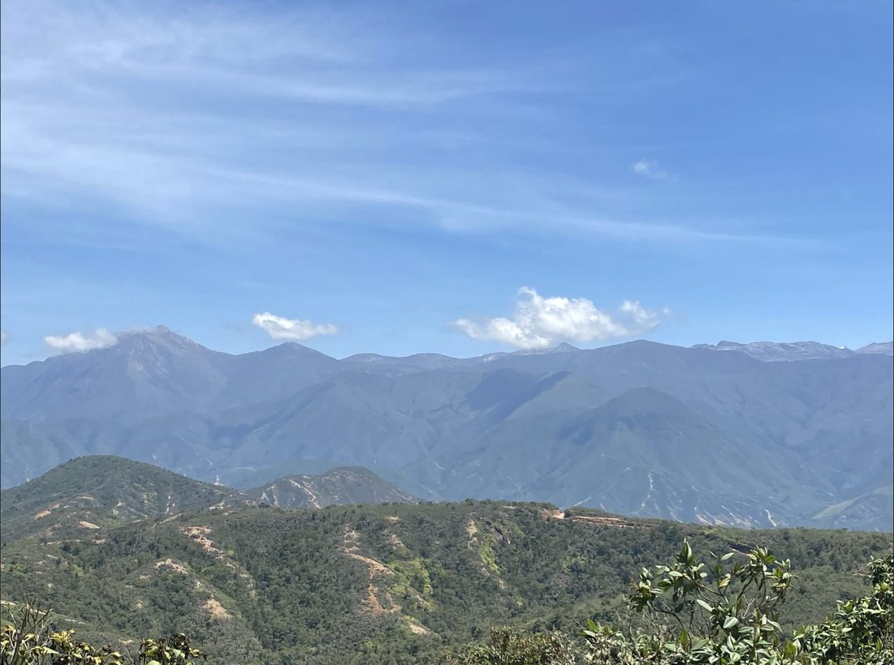
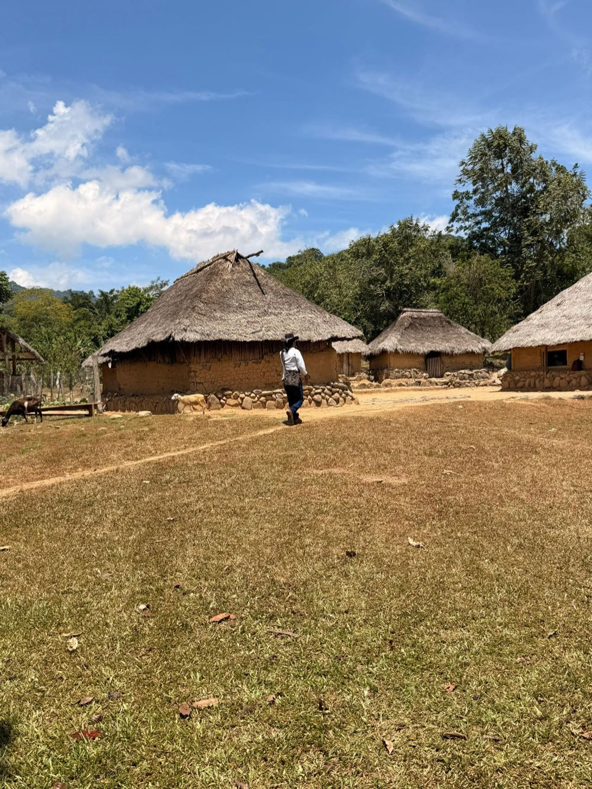
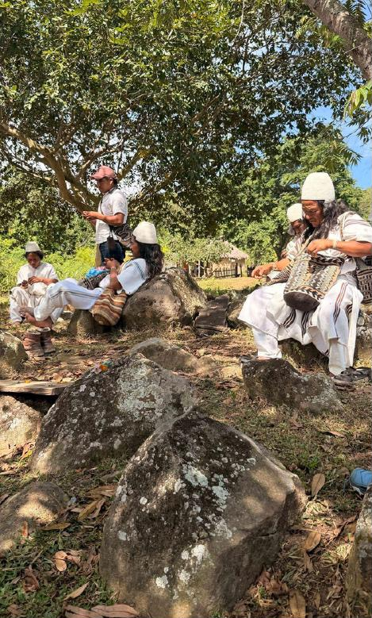
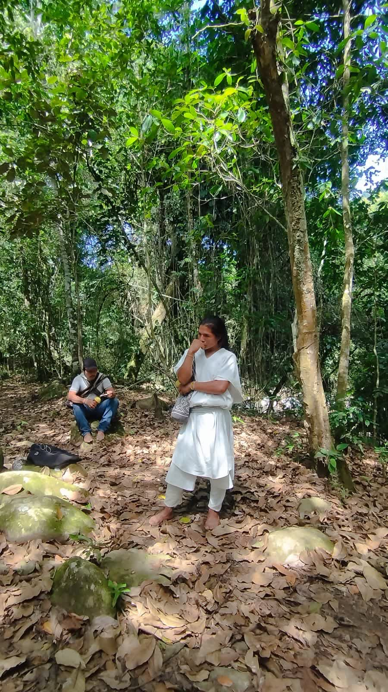
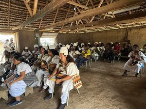
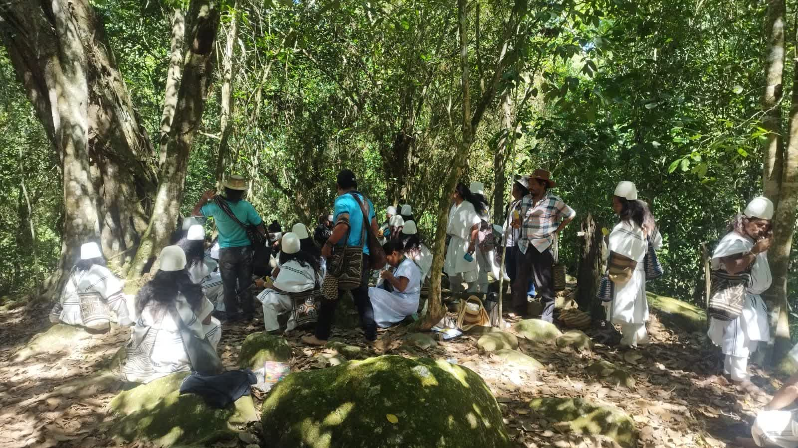

Ancestro que Seremos
Indigenous-led forest restoration in the Sierra Nevada de Santa Marta. Nine Arhuaco communities, one watershed, a forty-year commitment.
A mountain governed for centuries by its own peoples
The Sierra Nevada de Santa Marta is a UNESCO Biosphere Reserve and Colombia's highest coastal mountain range. Four peoples (Arhuaco, Kogui, Wiwa and Kankuamo) have governed it under their own legal and spiritual systems for generations.

The problem
Substantial areas inside these territories have been out of forest cover for more than ten years, after conflict, displacement and shifting land use. Without structured capital and a community-anchored governance framework, that restoration potential stays unrealised.
The opportunity
Colombia's NDC commits to a 51% emissions reduction against business-as-usual by 2030, and CONPES 4063 makes ecosystem restoration a national priority. Indigenous-led restoration under territorial governance and free, prior and informed consent is a category where supply stays structurally constrained.
Ancestro que Seremos at a glance
- Location
- Cuenca Durankwa Meyna (Río Ariguaní headwaters), Pueblo Bello, Cesar, Colombia · Sierra Nevada de Santa Marta
- Rights holders
- 9 Arhuaco communities, Resguardo Arhuaco Businchama · 7 active in Phase 1
- Project area
- 4,533 ha across 90 collectively titled predios · about 30 predios under integration
- Standard
- Equitable Earth v1.3.1 · Methodology M001 v1.2, terrestrial forest restoration
- Term
- 40-year crediting period, renewable
- Status
- Feasibility stage · Validation Agreement signed with the communities (August 2026) · Equitable Earth agreements in place (September 2026)
- Developer
- Equiterra Capital LLC, project proponent · Saumama Foundation as neutral community-side guarantor

From dry forest to humid mountain, in one watershed
The project area climbs through three altitude strata, each with its own biome and its own restoration logic. Select a band.
Humid mountain, over 1,000 m
Biome T1.2, humid montane forest. The largest stratum and the headwaters of the Río Ariguaní.
Land cover today
ESA 2021, whole area.
Where restoration is needed
About 42% of the area needs active restoration; the remaining 58% is forest close to its natural condition, where the project protects it and supports natural regeneration.
Assisted regeneration first, planting where needed
The forest wants to come back. The project's first job is to let it: protect, manage fire and grazing, and plant only where regeneration alone will not reach.

Assisted natural regenerationThe default: protection, fire and grazing management, survival management.
Enrichment plantingNative species on degraded slopes, with soil stabilisation where needed.
Agroforestry pilotsCacao, coffee and avocado on land already cleared, to lift returns without new clearing.
Methodology rulesNo commercial harvest, no biomass burning, no nitrogen fertiliser (M001).
Pilot plantingPilot nurseries and planting on at least 2% of the area (about 90 ha), planned for 2027.
Species chosen with communitiesNursery siting is constrained by altitude and dry-season water.
Proven know-howPractical experience from the Saumama team's participation in Musesi, about one million trees planted in the Sierra.
Seed collectionNative seed collected in the territory to supply the community nurseries.
Satellite coverageThe full 4,533 ha monitored by Equitable Earth from registration, at pixel level.
Communities as data collectorsNine communities trained in georeferenced data collection. They draw the polygons and report change.
Permanent plotsProposed: 20 plots of 500 m² per stratum in year one, to reach Tier 2 at first verification.
Restored-condition criteriaDefined per predio with the communities before the feasibility submission.
What is done, what is under way, what is still ahead
- Socialisation assembly, 4 May 2026, Gunchukwa See event →
- Validation Agreement signed, 7 August 2026, Kunkurwa de Nawaku See event →
- Participatory mapping delivered; polygons being finalised by the communities See event →
- Equitable Earth contract set executed, 3 September 2026
- Household survey and topographic data collection, community-run
- Feasibility study
- Capacity building in Bogotá for five Arhuaco leaders, October 2026 See event →
- Benefit-sharing model and Contrato de Asociación agreed
- Safeguards guide adopted; Project Design Document developed
- Equitable Earth feasibility and design; validation initiated
- Pilot nurseries and planting on at least 2% of the area (about 90 ha)
- Restoration at scale begins
- Project Design Document validated by an accredited body
- First monitoring and verification of restoration outcomes
- First issuance of verified credits, targeted
- PDD reviewed and adapted every four years
The communities hold the rights. The project is built around that.
Equiterra Capital
Project proponent. Structures the project, mobilises capital and carries the carbon development work.
Saumama Foundation
Neutral counsel to the communities, with accompaniment and institutional guarantee at every stage.
9 Arhuaco communities
Implementers and primary beneficiaries, working through their own cabildos and comisarios. No external labour model.

A partnership, not a contract for labour
Communities take part as partners, not contractors: they share in the project's benefits from the first year and in the credits it generates. The benefit-sharing model is being defined together with the communities.
Consent record
Acta de Socialización, 4 May 2026, Gunchukwa, where women leaders also spoke at the assembly.
Acuerdo de Validación, 7 August 2026, Kunkurwa de Nawaku, signed by mamos, cabildos and comisarios.
Guía de Salvaguardas Sociales y Ambientales, built jointly and binding under the Acuerdo (Cláusula Séptima).
Carbon rights
The communities hold the rights: collective title under the 1991 Constitution, and carbon follows land and forest rights.
The consent process was built to the standard of Decreto 488 of 2025 and Constitutional Court ruling T-248 of 2024.
Grievance and protection
The Equitable Earth Grievance Mechanism Requirements and Procedures v1.0 apply, independent of the developer.
Saumama as neutral counsel means the communities have advice that is not the developer's.
Any predio with third-party occupation, claim or dispute is excluded at polygon level.
Life on the land, and why it needs restoring

Current activities
- Subsistence and small-commercial agriculture: coffee, cacao, plantain, cassava, maize, beans
- Small-scale livestock, some honey, traditional weaving and craft
- Territorial governance and care of sacred sites through mamos and cabildos
- Pueblo Bello has a working coffee economy and cacao collection, so agroforestry strengthens an existing value chain
Why restoration is needed
- Agricultural frontier pressure at the lower boundary, with forest converted to pasture
- Short-fallow subsistence agriculture and fuelwood extraction
A biodiversity hotspot
The Sierra Nevada de Santa Marta is a UNESCO Biosphere Reserve, with endemic species across an unbroken altitudinal gradient from sea level to 5,700 m.
Measured conservatively, validated before it is claimed
Every carbon figure on this page is an ex-ante estimate. None has been validated or certified.
Standard and method
Equitable Earth, Methodology M001 v1.2, terrestrial forest restoration. Credits are issued as ECUs, net of baseline, uncertainty and a 20% buffer contribution.
Early-year net rate
Preliminary estimates point to roughly 6 tCO₂e per hectare per year, net, in the first five years. That is an early-year rate, not a 40-year average: the lifetime average is lower, and is being confirmed through baseline finalisation and field calibration.
Leakage and permanence
A 5 km leakage belt is monitored by satellite, with a formal estimate at feasibility. The buffer pool covers reversal risk.
Contribution to the Sustainable Development Goals
- 1No Poverty
- 2Zero Hunger
- 4Quality Education
- 5Gender Equality
- 6Clean Water and Sanitation
- 8Decent Work and Economic Growth
- 9Industry, Innovation and Infrastructure
- 10Reduced Inequalities
- 11Sustainable Cities and Communities
- 12Responsible Consumption and Production
- 13Climate Action
- 15Life on Land
- 16Peace, Justice and Strong Institutions
- 17Partnerships for the Goals
The territory and its people
Milestones with the communities
Capital for high-integrity nature projects
Article 6, sovereign structuring and community-anchored carbon assets in Latin America and Africa.
ancestro@equiterra.capital → equiterra.capital